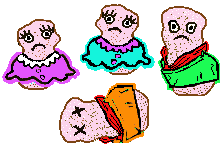
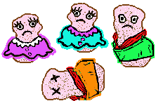

So the little lumps, with the wisdom that they had found, were sent to
live in the world. And they felt loneliness, pain, and confusion. And as
the Wumpalump had commanded they were fruitful and multiplied. But always
with wisdom they looked to the nothingness and saw they lacked... so
loneliness, pain, and confusion were multiplied.

So the little lumps, with the wisdom that they had found, were sent to
live in the world. And they felt loneliness, pain, and confusion. And as
the Wumpalump had commanded they were fruitful and multiplied. But always
with wisdom they looked to the nothingness and saw they lacked... so
loneliness, pain, and confusion were multiplied.
And some little lumps arose who were wiser than their fellows. They saw
what they lacked and with craftiness and guile stole what the other little
lumps possessed... thus becoming rich and wealthy.
And other little lumps there were who were wiser and
they organized their fellows and gained great power. This
way they forced from others the things they lacked.
And thus it was in the world. Each little lump taking
from others to fill what he lacked.
And sickness... and hunger... and death stalked the
land and no one there was to save them from the nothingness.
But some little lumps remembered the Wumpalump's promise. That someday he
would free them from their loneliness, pain, and confusion.